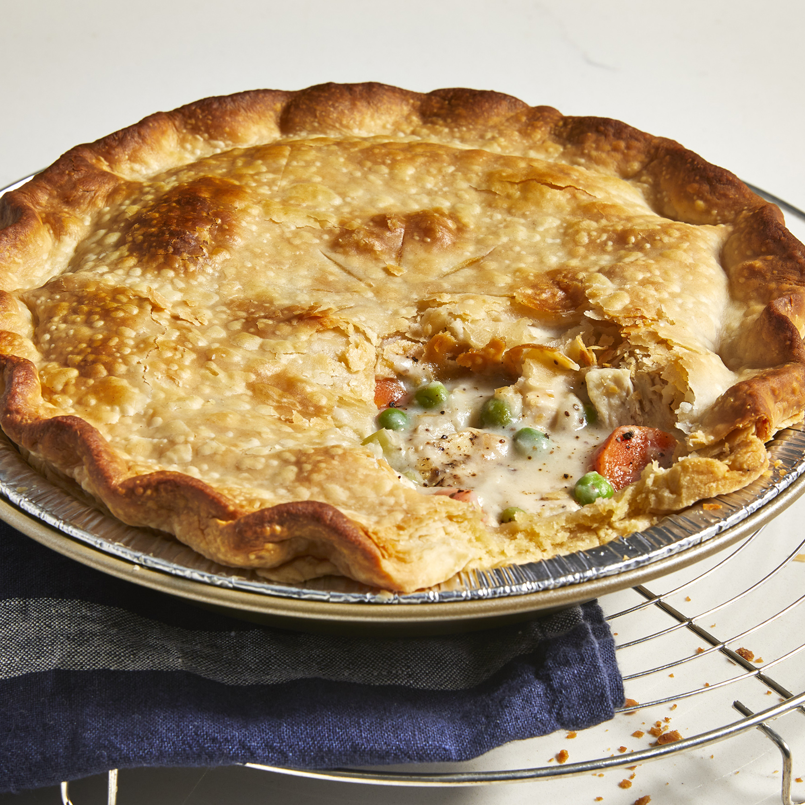

Home
Chicken Pot Pie

Every home cook needs a good chicken pot pie recipe in their repertoire.
On the hunt for a new family favorite? You're in luck! This homemade chicken pot pie definitely deserves a permanent spot in your recipe box.
Ingredients
- Chicken Breast
- Frozen Veges
- Butter
- Flourr
- Seasoningst
- Pie Crusts
Directions
Make the filling
- Boil the cubed chicken with the carrots, peas,
and celery for about 15 minutes. Drain and set
aside. Cook the onions in butter until they're
translucent, then stir in the flour and seasonings.
Add the chicken broth and milk and simmer until
the filling is thick.
Fill and Bake the Pie
- Place the chicken-vegetable mixture in an unbaked pie
crust. Pour the chicken broth mixture over it. Cover
with the top crust, seal the edges, and cut slits
in the top to allow the steam to escape. Bake until
the pastry is golden brown and the filling is bubbly.